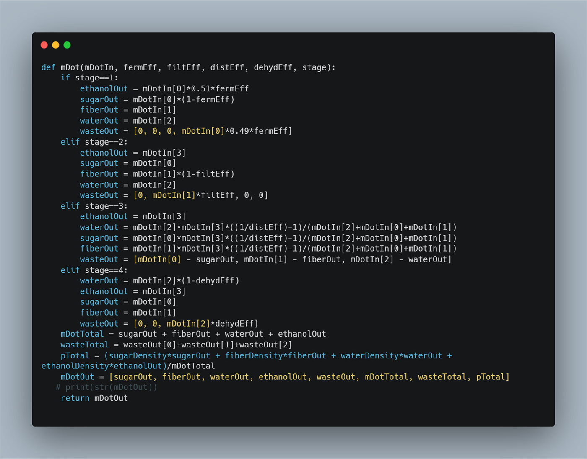
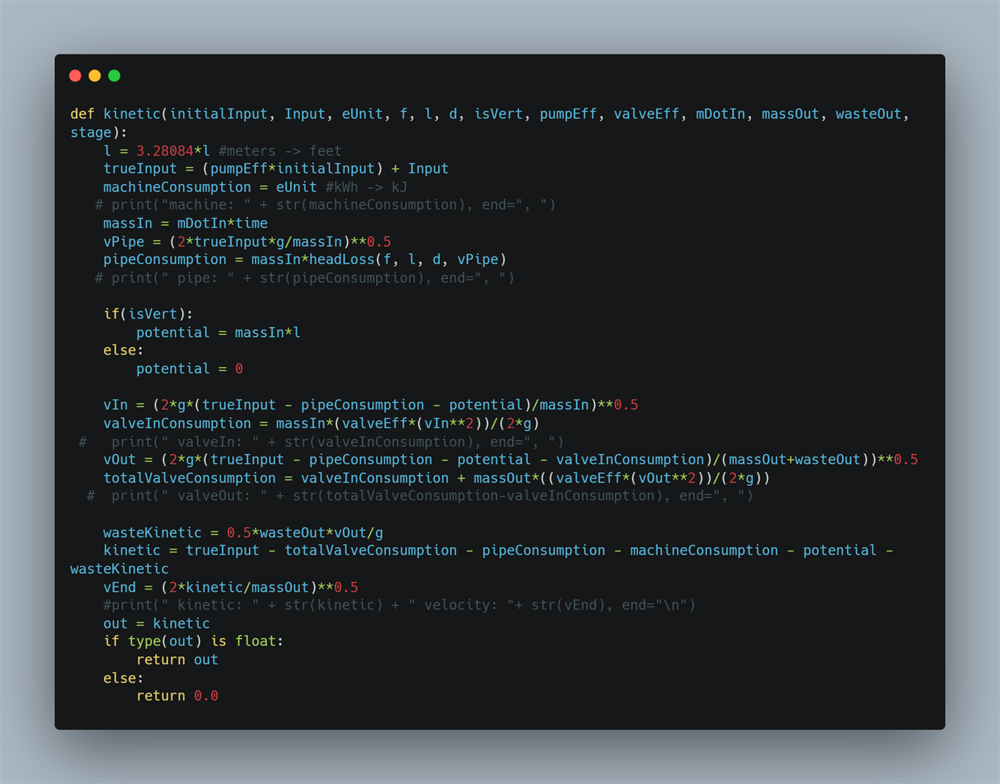
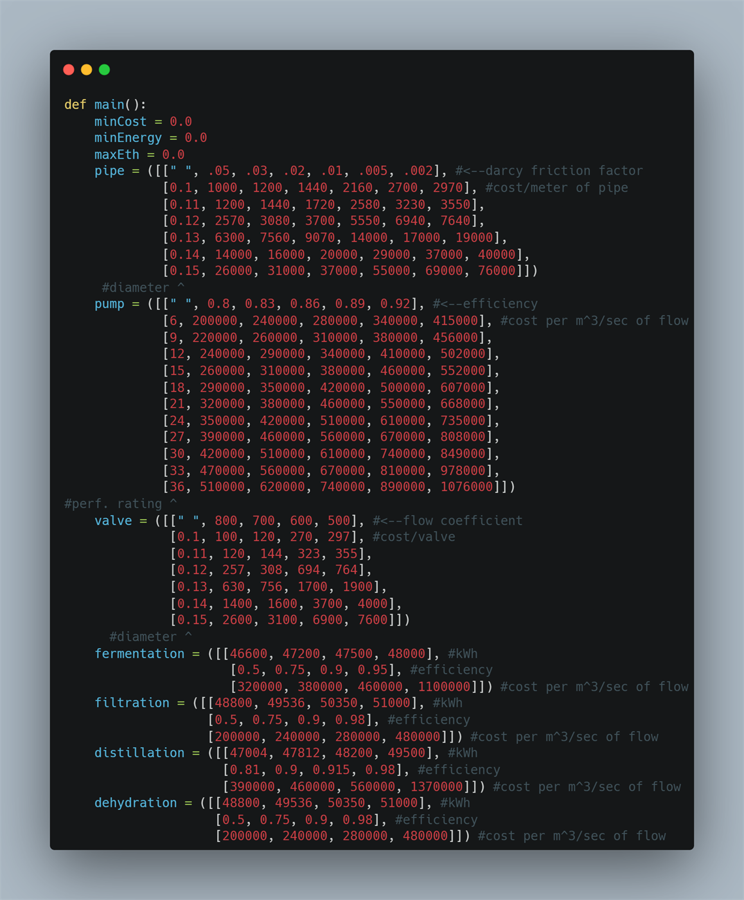
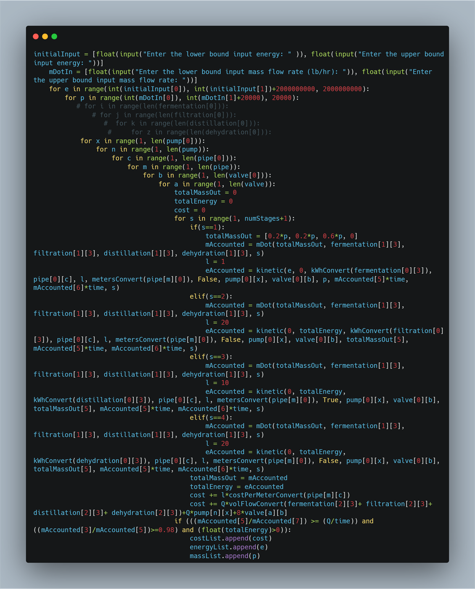

SATHYA DEVARAJAN
Mechanical engineering student building real hardware in design, structures, and manufacturing, with an eye on problems that matter for people and the planet.
Purdue University — John Martinson Honors College · B.S. Mechanical Engineering · GPA 3.8 · Expected May 2028


About
My depth is in mechanical design, structural analysis, and design-for-manufacturing. I've machined drivetrain components for Purdue's Formula SAE Electric team and designed production tooling for rotorcraft at Sikorsky, and what I care about is the full path from geometry and tolerancing to a part that comes off a machine and works. From that base I've pushed outward into the systems around the hardware: sensor fusion and closed-loop control, analog circuit design, and Python simulations for feasibility and trade studies. I got into engineering to work on problems that genuinely help people and the planet, and the more of the stack I understand, the more useful I can be on them.
Experience
- Designed and revised 14 production tooling fixtures and jigs (drill jigs, assembly locators, masking fixtures) in CATIA V5 for CH-53K, Black Hawk, and search-and-rescue rotorcraft, 3 of which are now in use on the shop floor.
- Toleranced 12 tools to ASME Y14.5 GD&T, matching every callout to the process that would actually make the part (CNC milling, manual machining, or additive) rather than to a single default standard.
- Traced constraint and leakage failures in 3 released production tools back to root cause and redesigned each one, which cut procurement lead time and dropped a secondary machining setup from the build.
- Maintained multi-level BOMs for all 14 tools and routed engineering change orders through SAP ERP and 3DEXPERIENCE PLM, so manufacturing engineers and machinists worked from current tooling data across releases.
- Co-designed the hybrid-electric powertrain for the dual-propeller Nomad VTOL, packaging an ICE, motor generator, battery pack, and a per-propeller motor and planetary gearbox inside thermal limits; presented to leadership.
- Designed the rear upright and planet carrier for the 2027 outrunner drivetrain in NX, cutting weight 32%.
- Ran static structural FEA on the rear upright and hub group, then reworked stiffener and fillet geometry against the stress peaks and 2 mm deflections it exposed, and pulled dead weight out of near-zero-stress areas.
- Drafted the rear upright to sub-0.003 in. bearing and seal bore tolerances, called out for a manual boring finish.
- Cut wheel-upright machining time 50% by reworking the toolpaths from 3-axis to 5-axis CNC milling, then built the fixture plate that locates and holds the upright through the remaining 3-axis production runs.
5-axis CNC toolpathing and machining shown below were performed on the previous (2026) upright design, ahead of the 2027 redesign shown above.
5-Axis Roughing 5-Axis FinishingAfter 5-Axis Op
5-Axis FinishingAfter 5-Axis Op After Final 3-Axis Op
After Final 3-Axis OpProjects
Custom Electric Bike Design
- Built a fully parametric frame assembly in Siemens NX keyed to off-the-shelf tubing dimensions, so wheelbase, head angle, chainstay angle, and dropout geometry all update from a single set of driving inputs.
- Ran Ansys FEA on each candidate frame, swapping stock tube diameters and wall thicknesses through the parametric model to find the lightest combination that holds a 2.0 minimum safety factor under static load.
- Ran cost-versus-performance trade studies on motors, sprockets, and tubing alongside the FEA, converging on the cheapest catalog set that still meets the target safety factor and ride geometry, 9% under the first build cost.

Autonomous Supply Robot
- Navigated a walled maze on ultrasonic and IMU sensing, adding infrared to dodge heat and magnetic hazards.
- Designed a gripping mechanism that holds cargo in transit and releases it at the target destination.
- Logged the path traveled by IMU dead-reckoning, recording hazard and delivery coordinates into a matrix.
Analog Audio Equalizer
- Designed schematic for an audio equalizer and amplifier to recombine adjusted treble, mid, and bass frequencies for customizable output.
- Troubleshot and validated breadboard circuit assembly via frequency generator, oscilloscope, and multimeter.

Complex Surface Topography
- Produced a 2D grayscale gradient heightmap from a source portrait photo.
- Built 3D mesh geometry from the heightmap in Fusion 360, keeping the organic topology machinable.
- Cut machining time 60% by reworking CAM toolpaths, holding surface detail with almost no hand rework.


Mars Rover
- Built a compact drivetrain with a custom worm-gear cargo system to carry 500 g loads up 35° inclines.
- Wrote a Python control loop that trims motor PWM from live IMU feedback to hold the line over rough terrain.
Ethanol Production Process Optimization
- Built a low-fidelity Python model of an ethanol plant, parameterized by machinery, piping, and valve specs.
- Swept every valid component combination to find the plant configuration with the lowest cost per unit energy.




Smog Tower Feasibility Study
- Researched Studio Roosegaarde's Smog Free Tower concept and evaluated its feasibility for large-scale deployment to reduce PM2.5/PM10 air pollution in Hong Kong within realistic budget and practicality constraints.
- Built a low-fidelity Python simulation modeling individual particle motion to determine each tower's effective cleaning radius — the area where PM2.5/PM10 concentrations could be held at or below global health standards.
- Combined the simulation results with a scale-deployment feasibility analysis to conclude that city-wide deployment wasn't practical — a data-driven recommendation rather than a subjective call.
Skills
CAD/CAM/PLM
- CATIA V5
- Siemens NX
- Fusion 360
- 3DEXPERIENCE
- Teamcenter
- SAP ERP
Manufacturing
- 3- & 5-Axis CNC Machining
- Manual Machining
- Additive Manufacturing
- Fixture Design
- Soldering
Tolerancing & Analysis
- GD&T (ASME Y14.5)
- Ansys FEA
- Dive CFD
Modeling
- Python trade studies
- Combinatorial optimization
- Cost & energy modeling
Controls / Electronics
- Python
- MATLAB
- Arduino
- LTSpice
- KiCad